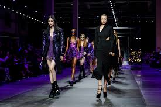
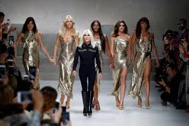

Early Life
Donatella was the youngest sibling with two older brothers. Although she was the youngest and only girl, she formed a deep bond with her Brother Gianni, who was the original visionary behind the versache brand.
Gianni was the first of the siblings to move to milan and start his career in 1972. A year later Donatella moved to Florence for school to study and become a teacher. She often found herslef visiting her brother because of how close they were. She soon fell in love with fashion design just as much as he did and decided she also would like to persue this dream.
Begginings

Gianni Versace started his brand and in 1978 Donatella stepped up into the role of vice president. She worked for her brother as a designer but also had her own lines such as Young Versace and Versus.
She continued in this work until 1997 when tragidy struck and her brother tragically died. Donatella took it upon herself to step up and continue on her brothers legacy.
Donatellas successful first collection for Atelier Versace in the Spring/Summer collection of 1998 put her on the map as a serious fashion designer. Her first runway was on a see-through runway suspended over the Ritz Hotel;s swimming pool in Paris.
Peak
Since then Donatella has worked hard to keep her name out there and growing. She has worked with many designers and high end fashion brands. The brand was considered to be in its golden era in the 80s and 90s thans to Giannis vision but Donatella has continued its growth and has become a huge name around the world.
Influence
Donatella still oversees every part of the Versace vision. Donatellas influence has spread across the world and media. She has designed for huge celebraties and still continues to do so. She is an amazing designer who continued on a family legacy. Through her hard work the Versache name will never be forgotten.